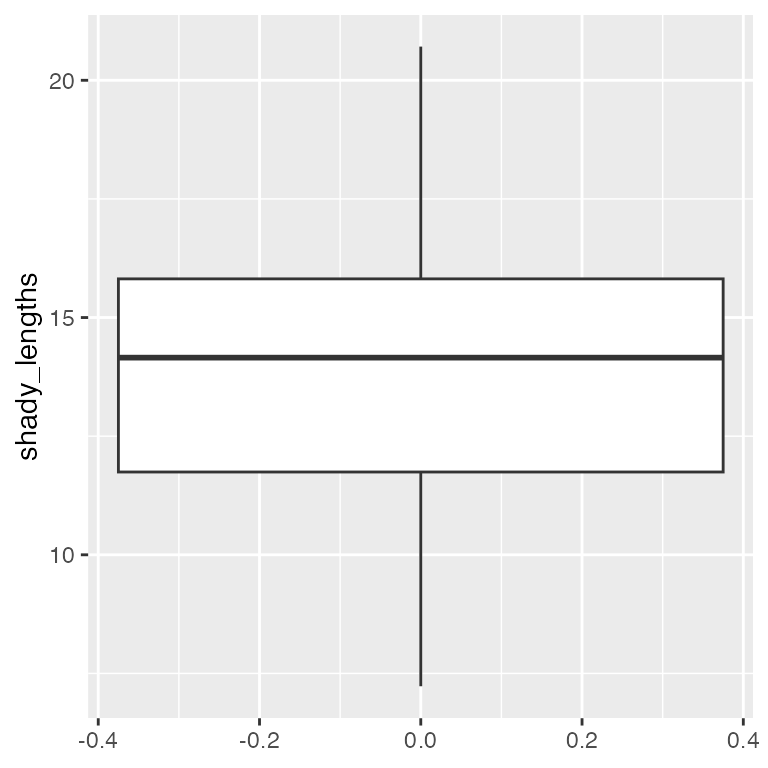
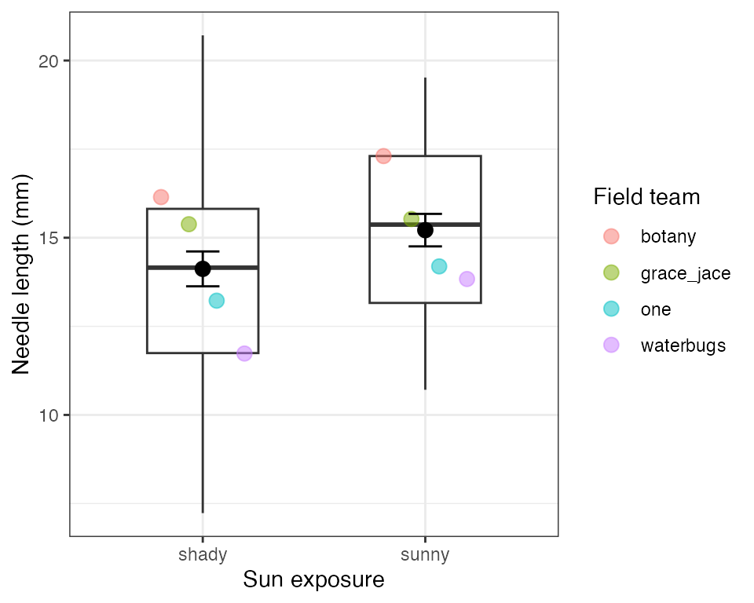
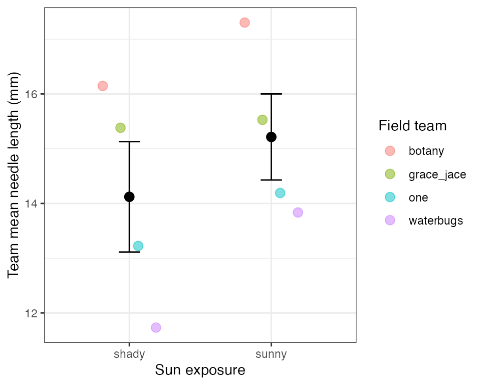

library(tidyverse)
pine_df <- read_csv("data/pine_data.csv")Lecture: Describing Your Data
Mean, spread, counting correctly, and group summaries
Descriptive Statistics
R
tidyverse
Mean, median, variance, standard deviation, and standard error; quantiles, range, and IQR; the length() trap and the sum(!is.na()) fix; a fast full-dataset overview with skimr; and getting tidy per-group summaries with group_by() + summarize() — all on the pine needle dataset.
Where We Left Off
Last time you:
- Imported data two ways (
read_csv(),read_excel()) - Wrangled with
filter(),select(),mutate(),arrange() - Caught duplicate rows with
distinct() - Saved a new file with
write_csv()
Note
✅ Key idea from Wrangling Your Data
You can reshape a dataset and hand off a clean file. Today we start describing it — the step that comes before any formal test.
Note
Today’s roadmap
- Mean and median
- Variance and standard deviation
- Quantiles, range, and IQR
- The
length()trap — and the fix - Standard error
skimr— a fast full-dataset overviewgroup_by()+summarize()
Part 1 · Our Question, Revisited
Our Question, Revisited
- H₀: No difference in needle length between the shady and sunny sides
- Hₐ: Needle length differs between the two sides
Before we can formally test that with statistics, we need to describe what we actually measured.
Note
Plan for this unit
- Today — describe the data: center, spread, and group summaries
- A later module — formally test H₀ vs. Hₐ
Tip
🖐 Recap
side is "shady" or "sunny"; team is the field team name.
Four teams, four trees, eight needles per side — 64 rows, but only 4 trees.
Part 2 · The Mean
The Mean
\[\bar{x} = \frac{\sum_{i=1}^{n} x_i}{n}\]
- Add up every value, divide by n
- The balance point of the distribution
- Sensitive to outliers — one very large value disproportionately affects the mean
Example: Values 5, 6, 7, 8, 50 → mean = 15.2.
Is that a fair summary?
Not really — the outlier dominates.
Note
✅ Why it matters
The mean is the most commonly reported statistic
— and it’s the number every t-test, ANOVA, and regression is ultimately built around.
# Keep one side's rows -- still a data frame -----
shady_df <- pine_df |>
filter(side == "shady")
shady_df |>
summarize(mean_mm = mean(needle_length_mm))# A tibble: 1 × 1
mean_mm
<dbl>
1 14.1
Tip
📖 New pattern
filter() picks rows and gives back a data frame. summarize() collapses that data frame to one row of statistics — so we stay in data frames the whole way, exactly like every other analysis this term.
Note
📖 Reference
Whitlock & Schluter, Ch. 3 — Describing Data, on the mean as a measure of location.
Gotelli & Ellison, A Primer of Ecological Statistics, Ch. 3 — Summary Statistics: Measures of Location and Spread.
Part 3 · The Median
The Median
The middle value once the data are sorted
| Sorted data | Median |
|---|---|
| 5, 6, 7, 8, 50 | 7 |
| 5, 6, 7, 8, 50, 51 | (7 + 8) / 2 = 7.5 |
- Not pulled around by outliers — it’s robust
- If mean ≫ median → right-skewed data
- If mean ≈ median → roughly symmetric
sunny_df <- pine_df |>
filter(side == "sunny")
shady_df |>
summarize(med_mm = median(needle_length_mm))# A tibble: 1 × 1
med_mm
<dbl>
1 14.2sunny_df |>
summarize(med_mm = median(needle_length_mm))# A tibble: 1 × 1
med_mm
<dbl>
1 15.4
Note
✅ Key idea
Report mean and median together the first time you look at a new variable — a big gap between them is a signal worth investigating.
Note
📖 Reference
Whitlock & Schluter, Ch. 3 — Describing Data, on the median and why a robust measure of location matters with skewed data.
Part 4 · Variance (s2) and Standard Deviation (sd)
Variance and Standard Deviation
\[s^2 = \frac{\sum_{i=1}^{n}(x_i - \bar{x})^2}{n - 1} \qquad s = \sqrt{s^2}\]
- Distance of each value from the mean
- Square it — makes everything positive
- Average those squared distances (over \(n-1\))
- Square root brings variance back into the original units as the standard deviation
Larger spread = larger variance and SD.
Note
- Variance is in squared units (mm²)
- hard to interpret directly.
- Standard deviation (SD) is why we usually report it instead
shady_df |>
summarize(var_mm = var(needle_length_mm),
sd_mm = sd(needle_length_mm))# A tibble: 1 × 2
var_mm sd_mm
<dbl> <dbl>
1 7.74 2.78sunny_df |>
summarize(var_mm = var(needle_length_mm),
sd_mm = sd(needle_length_mm))# A tibble: 1 × 2
var_mm sd_mm
<dbl> <dbl>
1 6.73 2.59
Tip
📖 Rule of thumb
- For roughly normal data:
- ~68% of values fall within mean ± 1 SD
- ~95% within mean ± 2 SD
Note
📖 Reference
Whitlock & Schluter, Ch. 3 — Describing Data, on variance, standard deviation, and the coefficient of variation.
Gotelli & Ellison, Ch. 3 — Summary Statistics, for the same measures of spread.
Part 4b · Quantiles, Range, and IQR
Quantiles, Range, and IQR
shady_df |>
summarize(
min_mm = min(needle_length_mm), # the five numbers a
q25_mm = quantile(needle_length_mm, 0.25), # boxplot draws
med_mm = median(needle_length_mm),
q75_mm = quantile(needle_length_mm, 0.75),
max_mm = max(needle_length_mm),
range_mm = max_mm - min_mm, # max minus min
iqr_mm = IQR(needle_length_mm) # q75 minus q25
)# A tibble: 1 × 7
min_mm q25_mm med_mm q75_mm max_mm range_mm iqr_mm
<dbl> <dbl> <dbl> <dbl> <dbl> <dbl> <dbl>
1 7.23 11.7 14.2 15.8 20.7 13.5 4.07box_plot_1 <- ggplot(shady_df, aes(y = needle_length_mm)) +
geom_boxplot()
Note
✅ Key idea
The IQR is the range of the middle 50% of the data — it ignores the most extreme quarter on each end, which makes it robust to outliers the same way the median is.
Tip
🖐 Notice
med_mm and q50 are the same number. iqr_mm is just q75_mm - q25_mm, computed for you. And because shady_df is a data frame, it drops straight into ggplot() — no special handling.
📖 R4DS §10 — Exploratory data analysis
box_plot_1
Quantiles — Why This Matters for Graphing Effectively
sunny_df |>
summarize(
q25_mm = quantile(needle_length_mm, 0.25),
q75_mm = quantile(needle_length_mm, 0.75),
iqr_mm = IQR(needle_length_mm)
)# A tibble: 1 × 3
q25_mm q75_mm iqr_mm
<dbl> <dbl> <dbl>
1 13.2 17.3 4.14
Tip
📖 Preview
The box in a boxplot is the IQR — its bottom and top edges are the 25th and 75th percentiles you just computed. The boxplots you’ll build in Graphing Effectively are these five numbers, drawn.
Note
📖 Reference
Whitlock & Schluter, Ch. 2 — Displaying Data, on the boxplot and the five-number summary behind it.
Part 5 · The length() Trap
The length() Trap
Important
🔮 Predict first: A data frame has 5 rows, but 2 values are NA. What does n() return? What should your sample size be for a mean or SE calculation?
na_demo_df <- tibble(length_mm = c(4, 3, NA, 7, NA))
na_demo_df |>
summarize(
rows = n(), # every row — including NAs!
missing = sum(is.na(length_mm)) # how many are missing?
)# A tibble: 1 × 2
rows missing
<int> <int>
1 5 2
Note
📖 New words
n()— counts rows, whether or not the value is thereis.na(x)—TRUEwhere a value is missing!is.na(x)— the flip:TRUEwhere a value is realsum(!is.na(x))— counts the real values = the correct n
The length() Trap — Why It Matters
# Using n() as your sample size silently gives the WRONG answer
na_demo_df |>
summarize(
wrong_n = n(),
right_n = sum(!is.na(length_mm)),
sd_mm = sd(length_mm, na.rm = TRUE),
wrong_se = round(sd_mm / sqrt(wrong_n), 3),
right_se = round(sd_mm / sqrt(right_n), 3)
)# A tibble: 1 × 5
wrong_n right_n sd_mm wrong_se right_se
<int> <int> <dbl> <dbl> <dbl>
1 5 3 2.08 0.931 1.20
Warning
⚠️ Watch out!
R will not warn you. n() happily returns 5 when only 3 values are real — a silent, common error, and the two SEs above differ because of it.
Fix — sum(!is.na())
na_demo_df |>
mutate(
is_missing = is.na(length_mm), # TRUE where NA
is_real = !is.na(length_mm) # flipped: TRUE where real
)# A tibble: 5 × 3
length_mm is_missing is_real
<dbl> <lgl> <lgl>
1 4 FALSE TRUE
2 3 FALSE TRUE
3 NA TRUE FALSE
4 7 FALSE TRUE
5 NA TRUE FALSE na_demo_df |>
summarize(n_real = sum(!is.na(length_mm))) # count the TRUEs# A tibble: 1 × 1
n_real
<int>
1 3
Tip
Best practice: use sum(!is.na(needle_length_mm)) for n every time you compute an SE — never n(). Even when you’re sure there are no missing values. Field data rarely stays that clean.
How it works, step by step:
is.na(x)→TRUEfor each missing value!is.na(x)→ flips it toTRUEfor real valuessum(...)→ adds up theTRUEs (TRUE= 1)
mutate() shows the two logical columns; summarize() collapses them to the count.
Fix — Applied to Real Data
# Applied to our real data — even with no NAs, make it a habit
shady_df |>
summarize(n = sum(!is.na(needle_length_mm)))# A tibble: 1 × 1
n
<int>
1 32sunny_df |>
summarize(n = sum(!is.na(needle_length_mm)))# A tibble: 1 × 1
n
<int>
1 32
Tip
Even when you’re confident a column has zero missing values, run it through sum(!is.na()) anyway — it costs nothing and field data rarely stays clean for long.
Part 6 · Standard Error
Standard Error
\[SE = \frac{s}{\sqrt{n}}\]
- Measures how precisely you know the mean — not the spread of raw data
- Gets smaller as n grows: more data → a more precise estimate of the mean
| Describes | |
|---|---|
| SD | spread of individual data points |
| SE | precision of the sample mean |
We report SE whenever we’re making a claim about a group mean.
shady_df |>
summarize(
n = sum(!is.na(needle_length_mm)),
sd_mm = sd(needle_length_mm, na.rm = TRUE),
se_mm = round(sd_mm / sqrt(n), 2)
)# A tibble: 1 × 3
n sd_mm se_mm
<int> <dbl> <dbl>
1 32 2.78 0.49sunny_df |>
summarize(
n = sum(!is.na(needle_length_mm)),
sd_mm = sd(needle_length_mm, na.rm = TRUE),
se_mm = round(sd_mm / sqrt(n), 2)
)# A tibble: 1 × 3
n sd_mm se_mm
<int> <dbl> <dbl>
1 32 2.59 0.46
Warning
⚠️ Watch out!
sqrt(n()) and sqrt(sum(!is.na(x))) give the same answer only when there are zero missing values. Don’t assume — check.
Note
📖 Reference
Whitlock & Schluter, Ch. 4 — Estimating with Uncertainty, is the chapter for the standard error and the sampling distribution of the mean.
Gotelli & Ellison, Ch. 3 — Summary Statistics, covers the standard error alongside the standard deviation.
All Stats, One Group, One summarize()
shady_df |>
summarize(
n = sum(!is.na(needle_length_mm)),
mean_mm = round(mean(needle_length_mm, na.rm = TRUE), 2),
med_mm = round(median(needle_length_mm, na.rm = TRUE), 2),
sd_mm = round(sd(needle_length_mm, na.rm = TRUE), 2),
se_mm = round(sd(needle_length_mm, na.rm = TRUE) / sqrt(n), 2)
)# A tibble: 1 × 5
n mean_mm med_mm sd_mm se_mm
<int> <dbl> <dbl> <dbl> <dbl>
1 32 14.1 14.2 2.78 0.49- Every function takes
na.rm = TRUE - One row out, already labeled — and it is a data frame, so it pipes onward into
write_csv()orggplot()
Note
✅ Key idea
Running this once for shady_df and again for sunny_df is exactly the repetition group_by() + summarize() exists to remove.
Part 6b · skimr — a Fast Full-Dataset Overview
skimr — Every Column, One Command
install.packages("skimr") # once per machinelibrary(skimr)
skim(pine_df)| Name | pine_df |
| Number of rows | 64 |
| Number of columns | 6 |
| _______________________ | |
| Column type frequency: | |
| character | 3 |
| numeric | 3 |
| ________________________ | |
| Group variables | None |
Variable type: character
| skim_variable | n_missing | complete_rate | min | max | empty | n_unique | whitespace |
|---|---|---|---|---|---|---|---|
| source_file | 0 | 1 | 19 | 47 | 0 | 4 | 0 |
| team | 0 | 1 | 3 | 10 | 0 | 4 | 0 |
| side | 0 | 1 | 5 | 5 | 0 | 2 | 0 |
Variable type: numeric
| skim_variable | n_missing | complete_rate | mean | sd | p0 | p25 | p50 | p75 | p100 | hist |
|---|---|---|---|---|---|---|---|---|---|---|
| replicate | 0 | 1 | 4.50 | 2.31 | 1.00 | 2.75 | 4.50 | 6.25 | 8.00 | ▇▃▇▃▇ |
| needle_length_mm | 0 | 1 | 14.67 | 2.72 | 7.23 | 12.88 | 14.55 | 16.83 | 20.71 | ▁▅▇▇▂ |
| needle_width_mm | 0 | 1 | 1.07 | 0.21 | 0.65 | 0.96 | 1.10 | 1.22 | 1.58 | ▃▅▇▅▁ |
Note
✅ Key idea
skim() gives you n, missing count, mean, SD, and a tiny inline histogram for every numeric column — and counts for every character column — in one call. It’s the fastest way to sanity-check a dataset the moment you load it.
📖 R4DS §10 — Exploratory data analysis is this habit written out at length.
skimr — Doesn’t Replace, Just Speeds Up
# Same idea, restricted to numeric columns
pine_df |>
select(needle_length_mm, needle_width_mm) |>
skim()| Name | select(pine_df, needle_le… |
| Number of rows | 64 |
| Number of columns | 2 |
| _______________________ | |
| Column type frequency: | |
| numeric | 2 |
| ________________________ | |
| Group variables | None |
Variable type: numeric
| skim_variable | n_missing | complete_rate | mean | sd | p0 | p25 | p50 | p75 | p100 | hist |
|---|---|---|---|---|---|---|---|---|---|---|
| needle_length_mm | 0 | 1 | 14.67 | 2.72 | 7.23 | 12.88 | 14.55 | 16.83 | 20.71 | ▁▅▇▇▂ |
| needle_width_mm | 0 | 1 | 1.07 | 0.21 | 0.65 | 0.96 | 1.10 | 1.22 | 1.58 | ▃▅▇▅▁ |
Warning
⚠️ Watch out!
skim()is a first look, not a final answer.- you can pipe groups into it to show that
needle_length_mmshould be split byside- for real per-group comparisons, you still need
group_by()+summarize(), next.
- for real per-group comparisons, you still need
Part 7 · Tidy Group Stats — group_by() + summarize()
Tidy Group Stats — group_by() + summarize()
Note
🔮 Predict first: How many rows will the result have? (Hint: how many values does side take?)
side_stats_df <- pine_df |>
group_by(side) |>
summarize(
n = sum(!is.na(needle_length_mm)),
mean_mm = round(mean(needle_length_mm, na.rm = TRUE), 2),
med_mm = round(median(needle_length_mm, na.rm = TRUE), 2),
sd_mm = round(sd(needle_length_mm, na.rm = TRUE), 2),
se_mm = round(sd(needle_length_mm, na.rm = TRUE) / sqrt(n), 2)
)
side_stats_df# A tibble: 2 × 6
side n mean_mm med_mm sd_mm se_mm
<chr> <int> <dbl> <dbl> <dbl> <dbl>
1 shady 32 14.1 14.2 2.78 0.49
2 sunny 32 15.2 15.4 2.59 0.46group_by(side)splits the data by sidesummarize()collapses each group to one row of stats- Both groups, one clean table — no copy-paste
Warning
⚠️ Round last, not first
Tempting to write se_mm = sd_mm / sqrt(n) and reuse the column above. Don’t — sd_mm has already been rounded, so the SE inherits that error. Compute from the raw values every time; round only what you print.
Grouping by More Than One Variable
team_stats_df <- pine_df |>
group_by(team, side) |>
summarize(
n = sum(!is.na(needle_length_mm)),
mean_mm = round(mean(needle_length_mm, na.rm = TRUE), 2),
se_mm = round(sd(needle_length_mm, na.rm = TRUE) / sqrt(n), 2),
.groups = "drop"
)
team_stats_df# A tibble: 8 × 5
team side n mean_mm se_mm
<chr> <chr> <int> <dbl> <dbl>
1 botany shady 8 16.2 0.94
2 botany sunny 8 17.3 0.44
3 grace_jace shady 8 15.4 0.61
4 grace_jace sunny 8 15.5 1.07
5 one shady 8 13.2 0.78
6 one sunny 8 14.2 0.63
7 waterbugs shady 8 11.7 0.82
8 waterbugs sunny 8 13.8 0.96group_by(team, side)splits by field team, then side — one row per combination.groups = "drop"turns off the grouping once you’re done — good habit, avoids surprises later
Tip
🖐 Notice
Four teams × two sides = 8 rows. Does every team show the same shady-vs-sunny pattern, or do some disagree?
Part 7c · The n You Report Is a Choice
Look again at that n
Our side summary reported n = 32 per side. But where did 32 come from?
pine_df |> count(side, team)# A tibble: 8 × 3
side team n
<chr> <chr> <int>
1 shady botany 8
2 shady grace_jace 8
3 shady one 8
4 shady waterbugs 8
5 sunny botany 8
6 sunny grace_jace 8
7 sunny one 8
8 sunny waterbugs 832 needles per side — but only 4 trees. We measured 8 needles from each tree and then counted them as 8 independent facts about sun exposure.
Important
This is the pseudoreplication from Getting Started, in a summary table. The n in your table is a claim about how much independent evidence you have. Right now that claim is wrong.
Note
✅ Key idea
Ask of every n: “n of what?”
n = 32 needles is true.
n = 32 independent measurements of sun exposure is not.
The two-stage summary — the right way
Stage 1 — collapse each tree to one number:
team_means_df <- pine_df |>
group_by(team, side) |>
summarize(team_mean_mm = mean(needle_length_mm, na.rm = TRUE),
.groups = "drop")Stage 2 — now summarize those:
side_correct_df <- team_means_df |>
group_by(side) |>
summarize(
n_trees = sum(!is.na(team_mean_mm)),
mean_mm = round(mean(team_mean_mm), 2),
se_mm = round(sd(team_mean_mm) / sqrt(n_trees), 2)
)
side_correct_df# A tibble: 2 × 4
side n_trees mean_mm se_mm
<chr> <int> <dbl> <dbl>
1 shady 4 14.1 1.01
2 sunny 4 15.2 0.79
Note
✅ The pattern
group_by() + summarize() twice: once to get down to the unit you actually replicated, once to describe those units.
You will use this pattern for the rest of the course.
What changed, and what didn’t
| naive (n = 32 needles) | correct (n = 4 trees) | |
|---|---|---|
| mean, shady | 14.12 | 14.12 |
| mean, sunny | 15.21 | 15.21 |
| SE, shady | 0.49 | 1.01 |
| SE, sunny | 0.46 | 0.79 |
Important
The means did not move. The standard errors roughly doubled.
Pseudoreplication doesn’t bias your estimate — it fakes your precision. It makes you look twice as certain as your data entitles you to be.
Tip
🖐 Coming in Week 4
An SE that is twice as big makes a difference that is much harder to call real. That is exactly what we will see when we run the t-test — and why the paired test, which respects the tree structure, is the honest one.
Part 7b · See It — Boxplot with Mean ± SE
Every Number Today Has a Picture
Note
🔮 Predict first: The box shows the middle 50% of 32 needles. The error bar shows the mean ± 1 SE. Which will be narrower, and why?
side_plot <- ggplot(pine_df,
aes(x = side, y = needle_length_mm)) +
# 1 — spread of all 64 needles
geom_boxplot(width = 0.5, fill = NA,
outlier.shape = NA) +
# 2 — each team's mean, faded, behind
geom_point(data = team_means_df,
aes(y = team_mean_mm, color = team),
position = position_dodge(width = 0.5),
size = 3, alpha = 0.5) +
# 3 — mean and standard error, on top
stat_summary(fun = mean,
geom = "point", size = 3) +
stat_summary(fun.data = mean_se,
geom = "errorbar", width = 0.15) +
labs(x = "Sun exposure",
y = "Needle length (mm)",
color = "Field team") +
theme_bw()
Tip
📖 New pattern
stat_summary() computes a statistic while plotting — no summary table needed first. fun = mean draws the mean; fun.data = mean_se draws mean ± 1 SE.

Note
✅ Key idea
The box describes the spread of individual needles. The error bar describes how precisely we know the mean. They answer different questions — never read one as the other.
Note
📖 Reference
Whitlock & Schluter, Ch. 2 — Displaying Data, and Ch. 4 — Estimating with Uncertainty, on showing a mean with its uncertainty.
But Those Error Bars Are the Naive Ones
honest_plot <- ggplot(team_means_df,
aes(x = side, y = team_mean_mm)) +
geom_point(aes(color = team),
position = position_dodge(width = 0.5),
size = 3, alpha = 0.5) +
stat_summary(fun = mean,
geom = "point", size = 3) +
stat_summary(fun.data = mean_se,
geom = "errorbar", width = 0.15) +
labs(x = "Sun exposure",
y = "Team mean needle length (mm)",
color = "Field team") +
theme_bw()
Warning
⚠️ Watch out!
The plot on the previous slide fed stat_summary() all 32 needles per side, so it drew the n = 32 SE — the pseudoreplicated one. Feed it the 4 team means instead and the error bars widen to the honest n = 4.

Note
✅ Key idea
Same two stat_summary() layers, different data in — and a very different claim about precision. What you pipe into the plot is a statistical decision, not a plotting one.
Wrap-up
Today you:
- Computed mean and median, and know why they can disagree
- Computed variance and SD for each group with
summarize() - Computed quantiles, range, and IQR — and saw the IQR is literally the boxplot’s box
- Found the
n()trap and fixed it withsum(!is.na()) - Computed SE and know how it differs from SD
- Got a fast full-dataset overview with
skimr::skim() - Used
group_by()+summarize()to get every group’s stats in one table - Learned to ask “n of what?”, and used a two-stage summary to report the n we actually replicated
- Drew the whole thing: a boxplot with
stat_summary()mean ± SE, and saw the error bars change when the n changes
Tip
🖐 Before next class
Finish the worksheet: compute n, mean, SD, and SE for needle_length_mm grouped by side, and again grouped by team. Save the summary table with write_csv().
Note
Up next — Graphing Effectively
- Boxplots and jittered points, done right
- Plotting mean ± SE directly with
stat_summary() - Faceting, themes, and
ggsave()for a publication-ready figure
Readings
Before next class — chapter PDFs are posted on Canvas:
- Whitlock & Schluter, The Analysis of Biological Data — Ch. 3, Describing Data (mean, median, variance, SD, quantiles) and Ch. 4, Estimating with Uncertainty (the standard error and what it does not measure)
- Gotelli & Ellison, A Primer of Ecological Statistics — Ch. 3, Summary Statistics: Measures of Location and Spread
If you want more:
- Whitlock & Schluter, Ch. 2 — Displaying Data, for the boxplot and the five-number summary
Note
📖 R for Data Science (2e)
Free online at r4ds.hadley.nz:
- §3.5 — Groups and
summarize() - §10 — Exploratory data analysis
- §13 — Numbers — counts and summary functions
- §18 — Missing values — the
n()trap
Getting unstuck
When code breaks — and it will, that is normal:
- Read the error message out loud; it usually names the line
- Check the usual suspects:
library(tidyverse)loaded? Spelling? Did you forgetna.rm = TRUE? ?function_nameopens the help page- Bring the exact error (copy-paste it) to class or office hours
📖 R4DS §8 — Workflow: getting help
Note
✅ Key idea
Every working scientist googles error messages daily. Getting stuck is not failing — it is the job.